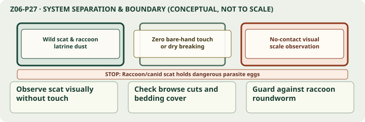

Z06-P27 · Hunting and fishing · New manuscript
Scat, Browse and Bedding Sign Interpretation and Hygiene
Interpret wildlife feeding and scat sign visually from safe distance without bare-hand contact or aerosolized parasite risk.
When it applies · Forests, shorelines, and campsites with animal sign.
Equipment · Metric scale placed nearby without touching scat, camera, hand sanitizer/soap.

Actions
- Inspect animal scat visually with a nearby ruler for approximate diameter, segmented shape, and visible hair, seeds, or bone without poking or breaking it dry.[H16]
- Never touch wild carnivore or raccoon scat barehanded—and avoid sweeping dry raccoon latrines—because Baylisascaris roundworm eggs and Echinococcus tapeworm eggs cause severe human disease if ingested or inhaled.[H16, M22]
- Cross-check scat observations with clipped twigs (clean diagonal rabbit cut vs ragged deer tear), bark gnawing (beaver/porcupine), and habitat.[H16]
Failure recognition · Breaking open dry scat with bare fingers or camping beside active raccoon latrines risks catastrophic parasitic infection.[H16]
Verify · All scat observations remain strictly no-contact, and hands are washed before eating.[H16]
Stop or change course · Stop inspecting enclosed barns, tree cavities, or latrine piles emitting dry dust; move away and wash hands.[H16]
Evidence and editorial notes
- H16 · Minnesota DNR · Mammals of Minnesota Species and Sign Reference (Current web edition)
- Section: Mammal ecology, seasonal movement, and sign interpretation · Conditions: Reading wildlife tracks, scat, browse, and trail patterns
Support: Substrate moisture, snow crust, and animal gait distort track dimensions; combine multiple signs and habitat context rather than single prints.
Limitations: Never handle unknown scat barehanded due to parasite eggs (e.g., Baylisascaris); sign interpretation is ecological observation, not harvest authorization. · Conflicting evidence: None noted.
Editorial note: Grounds Z06 tracking in ecology and hygiene. · Specialist reviewer: Wildlife ecologist
Primary source · checked 2026-11-25 - M22 · AHA and American Red Cross · 2024 Guidelines for First Aid (2024)
- Section: Positioning of the Ill or Injured Person · Conditions: Decreased alertness with normal breathing; no suspected neck/back/hip/pelvis injury
Support: Side-lying recovery position can be reasonable; reassess breathing continuously and act if it becomes abnormal.
Limitations: Avoid unnecessary movement after suspected spinal or pelvic injury. A recovery position may delay recognition of apnea if unmonitored. · Conflicting evidence: See A02 claim audit for boundaries.
Editorial note: Anchors airway-protection positioning and handoff documentation. · Specialist reviewer: EMS and emergency medicine
Primary source · checked 2026-11-25
Source lineage · New manuscript (Z06 P17 sign recognition) · Classification · New manuscript.